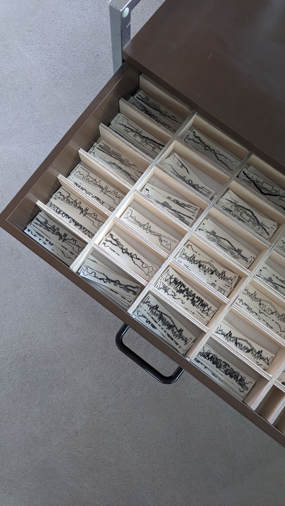
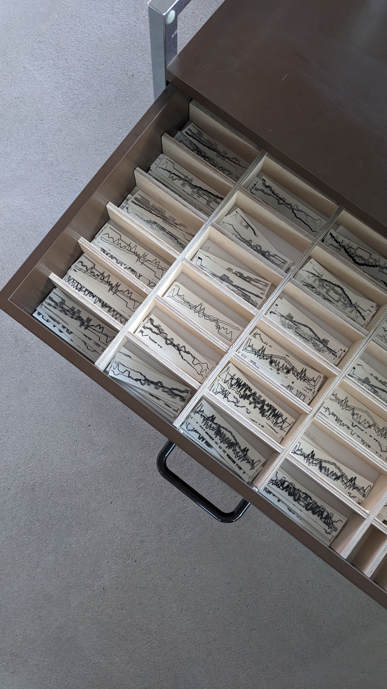
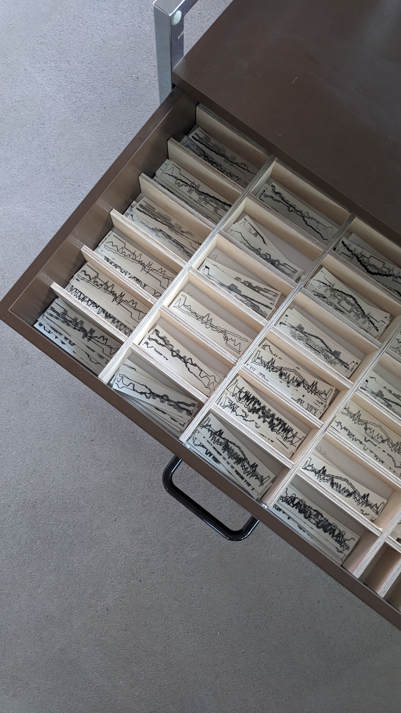

%20Toni%20Petraschk%20121-D-Yr4JGT.jpg) 

The collaborative research between metaLAB and ZK/U investigates in/visibilities of climate change through case studies, prototypes, and strategic interventions.
%20Kristin%20Krause23-DbNK-d1y.jpg)
%20Kristin%20Krause1-BFNr5tbz.jpg)
%20Kristin%20Krause8-BjLtXT3_.jpg)
%20Toni%20Petraschk%2025-BXSqIYoT.jpg)
%20Toni%20Petraschk%20135-Cc7J7Ifx.jpg)
A metaLAB (at) Berlin research project in collaboration with ZK/U Berlin – Center for Art and Urbanistics that focuses on raising awareness and mobilizing urban climate resilience through artistic interventions.

The collaborative research between metaLAB and ZK/U investigates in/visibilities of climate change through case studies, prototypes, and strategic interventions.
Up-Dates on Weather transforms real-time data from ZK/U's local environmental sensors into sensory and visual experiences, creating personalized weather data tattoos.
This installation reimagines how we perceive everyday weather by inviting visitors to compare their impressions with the live data collected on site. Data visualizations, 3D scans, and heat maps blur the lines between past and future weather, while a temporary tattoo exposes the subtle differences between human perception and sensor readings. The project highlights the collective yet individual nature of weather and the delicate balance between precision and interpretation.
Metalab:
Annette Jael Lehmann
Kim Albrecht
Giacomo Nanni
Till Rückwart
ZK/U:
Clemens Gruber
Matthias Einhoff
Stefan Koderisch